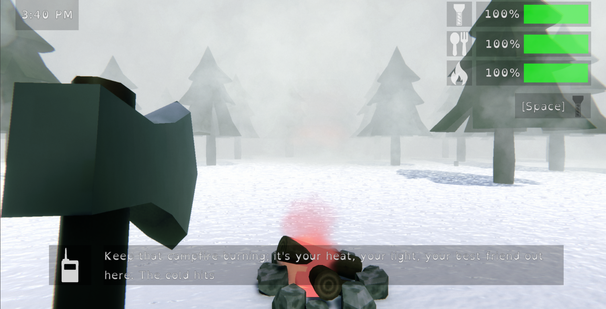

WhiteMaw
🎮 Play on itch.io


Project Overview
WhiteMaw is an intense wilderness survival horror game built in Unity 6 with URP, where players must survive one harrowing night in the snowy mountains while being hunted by a terrifying Yeti. This project combines sophisticated resource management, stealth mechanics, and atmospheric horror as you gather wood, cook food, maintain warmth, and evade the stalking predator.
The game features advanced AI behavior systems, dual survival mechanics (hunger and heat), dynamic day-night cycle with scene transitions, and a unique breathing mini-game mechanic for hiding from the Yeti. Built with clean, scalable architecture suitable for team collaboration.
Core Technical Systems
🎯 Advanced Yeti AI System
6-state AI system with NavMesh pathfinding, circular patrol patterns, noise-reactive investigation, and stalking behavior.
void InvestigateBehavior()
{
agent.speed = patrolSpeed;
investigationTargetAngle = GetAngleToPlayer();
float angleDiff = Mathf.DeltaAngle(currentAngle, investigationTargetAngle);
float absAngleDiff = Mathf.Abs(angleDiff);
if (absAngleDiff <= 2f)
{
HandleInvestigationComplete();
return;
}
float moveDirection = Mathf.Sign(angleDiff);
float moveAmount = Mathf.Min(angularSpeed * Time.deltaTime, absAngleDiff);
currentAngle += moveDirection * moveAmount;
SetDestinationToAngle(currentAngle);
}
// State Machine Structure
public enum YetiState
{
Patrolling,
Investigating,
Stalking,
Hunting,
Attacking,
WaitingAtTent
}
🔥 Dual Survival Resource Management
Real-time hunger and heat depletion systems with UnityEvents for UI updates and game-over conditions.
public class HeatSystem : MonoBehaviour
{
[SerializeField] private float maxHeat = 100f;
[SerializeField] private float currentHeat = 100f;
[SerializeField] private float heatDecayRate = 1f;
public bool isHeating = false;
public UnityEvent OnHeatChanged;
public UnityEvent OnHeatDepleted;
void Update()
{
if (!isHeating)
{
DecreaseHeat(heatDecayRate * Time.deltaTime);
}
}
private void DecreaseHeat(float amount)
{
currentHeat = Mathf.Max(0f, currentHeat - amount);
OnHeatChanged?.Invoke(currentHeat);
if (currentHeat <= 0f && !dead)
{
dead = true;
GameManager.Instance.GameOver("heat");
}
}
}
🌲 Interactive Resource Gathering
Tree chopping with axe requirement, dynamic log spawning, wood pile management, and campfire fuel system.
public class Campfire : Interactable
{
[SerializeField] private int numLogs;
[SerializeField] private float burnTimePerLog = 15f;
[SerializeField] private bool isBurning = false;
public void AddLog()
{
if (numLogs == 0)
{
numLogs++;
logsDisplayed[0].SetActive(true);
StartFire();
AudioManager.Instance.PlaySFX("StokingFire");
}
else
{
numLogs++;
SoundManager.Instance.AddNoise(5f);
}
}
private IEnumerator CampfireBurning()
{
isBurning = true;
particleObject.SetActive(true);
fireLight.enabled = true;
while (numLogs > 0)
{
yield return new WaitForSeconds(burnTimePerLog);
BurnLog();
}
isBurning = false;
}
}
🍖 Dynamic Cooking System
Material-blending cooking mechanic with proximity detection, visual feedback through shader lerping, and hunger restoration bonuses.
public class CookableFood : MonoBehaviour
{
[SerializeField] private float cookingTime = 5f;
[SerializeField] private float cookingRange = 2f;
[SerializeField] private float cookedHungerMultiplier = 2f;
private void CheckCookingNearFire()
{
distanceToNearestFire = Vector3.Distance(transform.position, nearestCampfire.transform.position);
if (distanceToNearestFire <= cookingRange && nearestCampfire.IsBurning())
{
currentCookingProgress += Time.deltaTime / cookingTime;
currentCookingProgress = Mathf.Clamp01(currentCookingProgress);
UpdateMaterialBlend(currentCookingProgress);
if (currentCookingProgress >= 1f && !isCooked)
{
isCooked = true;
OnFoodCooked();
}
}
}
private void UpdateMaterialBlend(float cookAmount)
{
blendedMaterial.Lerp(rawFoodMaterial, cookedFoodMaterial, cookAmount);
}
}
🫁 Breathing Mini-Game Mechanic
Skill-check system for hiding in tent with difficulty scaling based on player condition, failure consequences, and Yeti flee mechanics.
public class BreathingMiniGame2 : MonoBehaviour
{
[SerializeField] private float indicatorSpeed = 1f;
[SerializeField] private int maxFailedAttempts = 3;
public void StartMinigame()
{
float heat = HeatSystem.Instance.CurrentHeat;
float hunger = HungerSystem.Instance.CurrentHunger;
float total = heat + hunger;
if (total < 50f)
maxSkillChecks = 5;
else if (total < 100f)
maxSkillChecks = 4;
else if (total < 150f)
maxSkillChecks = 3;
else
maxSkillChecks = 2;
RandomizeZone();
UpdateSuccessZoneVisual();
}
private void OnMinigameCompleted()
{
SoundManager.Instance.ResetNoiseLevel();
YetiAI yeti = Object.FindFirstObjectByType();
if (yeti.currentState == YetiAI.YetiState.Hunting ||
yeti.currentState == YetiAI.YetiState.Stalking)
{
yeti.FleeFromPlayer();
}
}
}
🔊 Dynamic Noise Detection System
Sound-based threat level management with automatic decay, event-driven AI reactions, and footstep integration.
public class SoundManager : MonoBehaviour
{
[SerializeField] private float currentNoiseLevel = 0f;
[SerializeField] private float noiseDecayRate = 1f;
public UnityEvent OnNoiseLevelChanged;
void Update()
{
currentNoiseLevel = Mathf.Max(0f, currentNoiseLevel - (noiseDecayRate * Time.deltaTime));
if (Mathf.Abs(currentNoiseLevel - previousNoiseLevel) > NOISE_CHANGE_THRESHOLD)
{
OnNoiseLevelChanged?.Invoke(currentNoiseLevel);
}
}
public void AddNoise(float amount)
{
currentNoiseLevel = Mathf.Min(maxNoiseLevel, currentNoiseLevel + amount);
OnNoiseLevelChanged?.Invoke(currentNoiseLevel);
}
}
🚶 Advanced Player Controller
Unity 6 compatible movement with Input System integration, hunger-based speed reduction, cold-induced camera shake, and head bob.
float GetHungerSpeedMultiplier()
{
float hungerPercentage = HungerSystem.Instance.HungerPercentage;
if (hungerPercentage < 0.3f)
return speedMultiplierAt30Percent;
else if (hungerPercentage < 0.5f)
return speedMultiplierAt50Percent;
else if (hungerPercentage < 0.8f)
return speedMultiplierAt80Percent;
return 1f;
}
void HandleColdShiver()
{
float shakeAmplitude = GetColdShakeAmplitude();
if (shakeAmplitude > 0f)
{
shakeTimer += Time.deltaTime * shakeFrequency;
float shakeX = (Mathf.Sin(shakeTimer) + Random.Range(-1f, 1f) * 0.5f) * shakeAmplitude;
camera.transform.localPosition = cameraStartLocalPos + new Vector3(shakeX, 0f, 0f);
}
}
⏰ Day-Night Cycle System
Scene-based time progression with in-game clock display, automatic transitions between day/night scenes, and survival objective integration.
public class Clock : MonoBehaviour
{
[SerializeField] private float timeScale = 2f; // 1 real second = 2 in-game minutes
void CheckForTimeEnd()
{
if (isDayScene)
{
if (timer >= dayEndTime)
{
StartCoroutine(EndDayAndLoadNight());
}
}
else
{
float currentTime = timer % (24f * 60f);
if (currentTime >= nightEndTime && !nightEnded)
{
OnWin();
}
}
}
}
Technical Highlights & Architecture
- State Machine Architecture: Complex enemy AI with 6 behavioral states and seamless transitions
- NavMesh Integration: Dynamic pathfinding with circular patrol patterns and direct player pursuit
- Event-Driven Design: UnityEvents for system communication and UI updates
- Material Blending: Real-time shader interpolation for cooking visual feedback
- Resource Management: Dual survival systems affecting player movement and gameplay difficulty
- Audio Integration: Spatial audio, dynamic footsteps with noise generation, and contextual sound effects
- Input System: Unity's new Input System with action-based controls and pause-aware input handling
- Performance: Optimized coroutines, object pooling considerations, and efficient Update loops
- Unity 6 Compatibility: Uses linearVelocity instead of deprecated velocity property
Project Repository & Links
Explore the complete Unity project including all scripts, assets, and systems on GitHub, or play the game directly on itch.io.
itch.io Page: https://frogsonalog.itch.io/white-maw